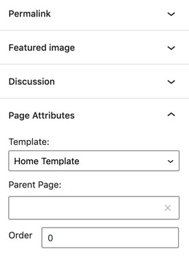
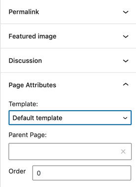
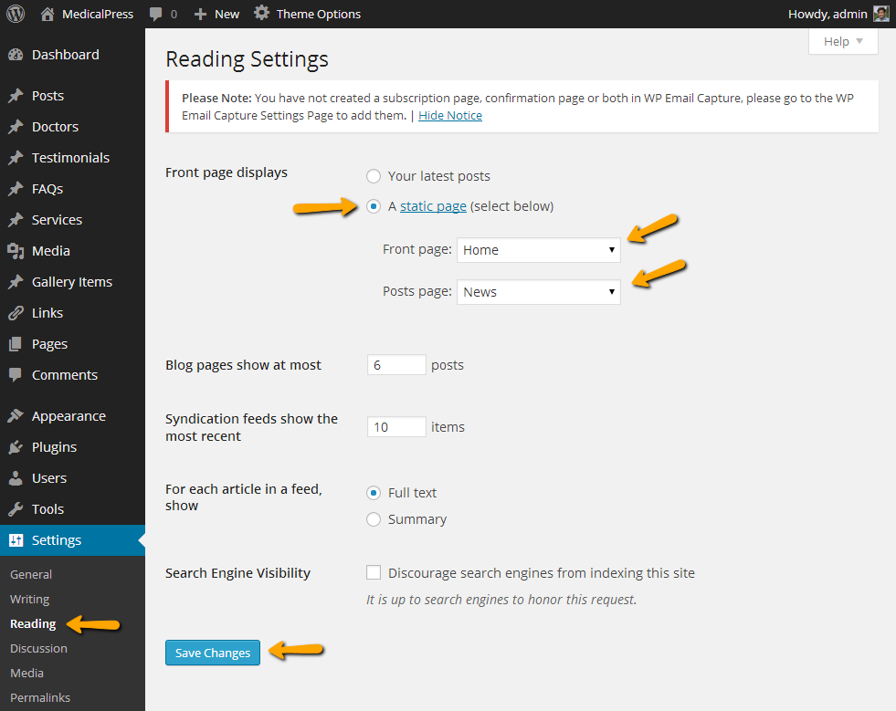
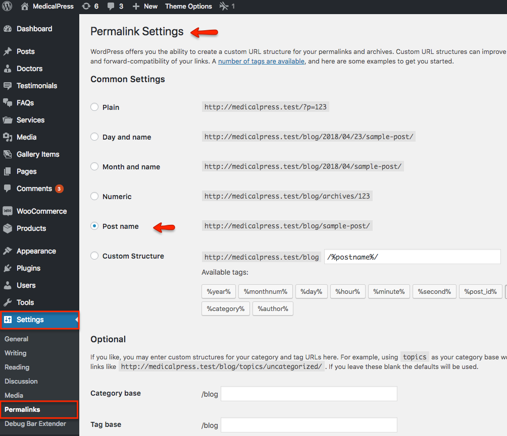

Create Home Page
Note: In case of imported XML the home page is already created and you do not need to follow this section.
To set up the Home page you need to create a new page, Go to Dashboard » Pages » Add New. You can give this page a title "Home" yet you do not need to include any contents for now.
Select the “Home Template” template from the Page Attributes section, as displayed in screen shot below and click “Publish”.

Create News Page
Note: In case of imported XML the news page is already created and you do not need to follow this section.
To set up the News page you need to create a new page,Go to Dashboard » Pages » Add New. You can give this page a title "News" yet you do not need to include any contents for now.
Select the “Default Template” template from the Page Attributes section, as displayed in screen shot below and click “Publish”.

Configure Reading Settings
To configure reading settings, visit Dashboard » Settings » Reading and choose that front page displays as static page. Then select Home as Front Page and News as Posts Page.

Configure Permalink Settings
To configure permalink settings visit Dashboard » Settings » Permalinks and configure it as displayed in image below.
